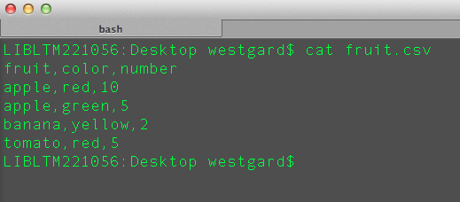
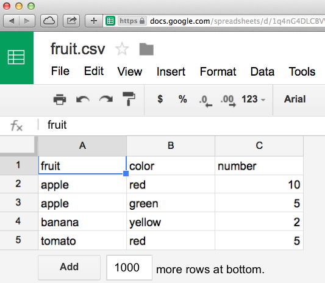
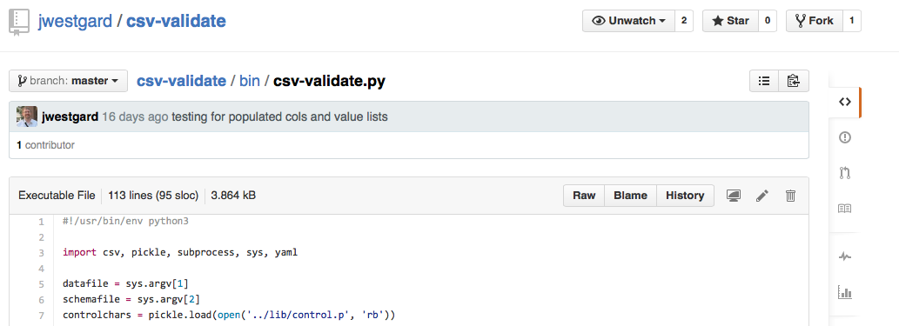
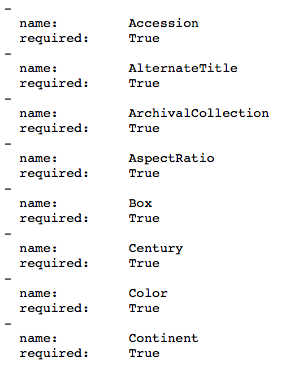
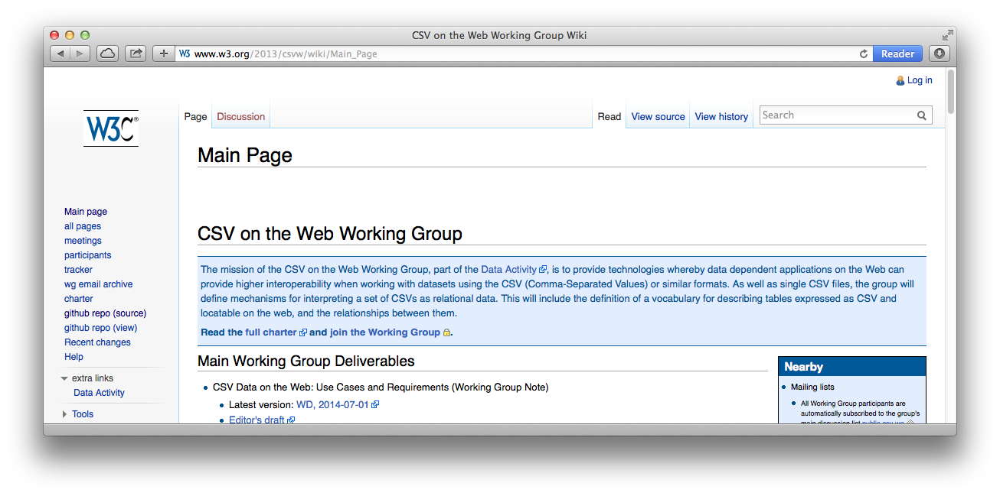

CSV Validation for Metadata Wrangling
A Libraries Research and Innovative Practice Forum Lightning Talk
Joshua Westgard
2015-06-04
The Problem

- Libraries have data stored in legacy systems or spreadsheets;
- For moving data between systems or into/out of a spreadsheet, the CSV file is a de facto standard;
- CSV = Comma Separated Values; AKA "the king of tabular file formats";
- The flexibility and ease of generating a CSV also means it is not very error tolerant and can be easily mangled;
- Import failures can precipitate a cycle of file ping-pong that is frustrating for both data creators and systems maintainers.
Issues with CSV

- The comma is a special character (field separator);
- The line break is a special character (record separator);
- Character encoding problems and differences in line breaks (Windows vs. Mac OS vs. Unix/Linux);
- Raw CSV is difficult to read and therefore difficult to correct when problems crop up;
- Tools exist, such AWK or CSVkit, but may require Unix command line skills;
- Google Sheets/Open Refine are more user-friendly, but not as beloved as Excel.
Guiding Principles
- It is neither feasible nor desirable to eliminate Excel and CSV from our workflows.
- Solution needs to make things easier, so an onerous learning curve is not an option.
- Data creators are properly the ones to do data validation and cleanup.
- Solution has to be general-purpose, not narrowly conceived.

The Solution

- CSV-Validate is a Python project that seeks to put control of data quality back in the hands of data creators.
- Allows for the creation of a human-readable CSV schema in the form of a YAML file.
- This file can be applied to a CSV with a single-line command:
python3 csv-validate.py schema.yaml data.csv
- CSV-Validate will read the YAML file and the CSV, and evaluate the latter against the former, producing a report that identifies violations of the schema by line and column.
- It can also work directly from an Excel file.
Future Plans
- Add data cleanup features to facilitate common data cleaning tasks (similar to Microsoft Office's spell check);
- Convert the python script to a GUI application;
- Explore opportunities to bring the application into alignment with new standards such as CSV on the Web (http://www.w3.org/2013/csvw/wiki/Main_Page).

Thank you!
Joshua Westgard (westgard@umd.edu)
/